Las estadísticas de resumen (summary) le brindan las herramientas que necesita para reducir conjuntos de datos masivos para revelar los aspectos más destacados. En este capítulo, explorará estadísticas resumidas, incluidas la media, mediana y desviación estándar, y aprenderá a interpretarlas con precisión. También desarrollará sus habilidades de pensamiento crítico, lo que le permitirá las mejores estadísticas de resumen para sus datos.
1.1 ¿Qué es la estadística ?
Es la práctica y el estudio de la recopilación y el análisis de datos. También podemos hablar de una estadística de resumen, que es un hecho o un resumen de algunos datos, como un promedio o un conteo.
1.1.1 ¿Qué pueden hacer las estadísticas?
on el poder de las estadísticas, podemos responder toneladas de preguntas diferentes como: ¿Qué tan probable es que alguien compre un producto? ¿Es más probable que las personas lo compren si pueden usar un sistema de pago diferente? ¿Cuántos ocupantes tendrá su hotel? ¿Cómo se puede optimizar la ocupación? ¿Cuántas tallas de jeans deben fabricarse para que le queden al 95% de la población? ¿Se debe producir el mismo número de cada tamaño? Una pregunta como, ¿Qué anuncio es más eficaz para que la gente compre un producto? Se puede responder con pruebas A/B
1.1.2 ¿Qué no pueden hacer las estadísticas?
Si bien las estadísticas pueden responder muchas preguntas, es importante tener en cuenta que las estadísticas no pueden responder todas las preguntas. Si queremos saber por qué la serie de TV Game of Thrones es tan popular, podríamos preguntar a todos por qué les gusta, pero pueden mentir o dejar de lado las razones. Podemos ver si las series con escenas más violentas atraen a más espectadores, pero incluso si lo hacen, no podemos saber si la violencia en Game of Throne es la razón de su popularidad, o si otros factores están impulsando su popularidad y simplemente sucede.
1.1.3 Tipos de Estadísticas
Hay dos ramas principales de la estadística:
Estadística Descriptiva
Estadística Inferencial
1.1.3.1 Estadística Descriptiva
Este tipo de estadística se centra en describir y resumir los datos disponibles. Después de preguntar a cuatro amigos cómo llegan al trabajo, podemos ver que el 50% de ellos conducen al trabajo, el 25% van en autobús y el 25% en bicicleta. Estos son ejemplos de estadísticas descriptivas.
1.1.3.2 Estadística Inferencial
Este tipo de estadística utiliza los datos disponibles, que se denominan datos de muestra, para hacer inferencia sobre una población más grande. Podríamos usar estadísticas inferenciasles para determinar que porcentaje de personas conducen al trabajo en función de nuestros datos de muestra.
1.1.4 Tipos de Datos
Existen dos tipos principales de datos. Los datos númericos o cuantitativos se componen de valores numéricos. Los datos categóricos o cualitativos están formados por valores que pertenecen a distintos grupos. Es importante tener en cuenta que estos no son los únicos tipos de datos que existen; también hay otros, pero nos centraremos en estos dos. Los datos numéricos se pueden separar en datos:
continuos, y
discretos.
Los datos numéricos continuos suelen ser cantidades que pueden medir, como la velocidad o el tiempo. Los datos numéricos discretos suelen ser datos de conteo, como la cantidad de mascotas o la cantidad de paquetes enviados. Los datos categóricos pueden ser nominales o ordinales.
Los datos categóricos nominales se componen de categorías sin orden inherente, como el estado civil o el país de residencia.
Los datos categóricos ordinales tienen un orden inherente, como una una pregunta de encuesta donde debe indicar el grado en que está de acuerdo con una afirmación.
1.1.5 Los datos categóricos se pueden presentar como números
A veces, las variables categóricas se representan mediante números. Los casados y solteros se pueden representar usando 1 y 0, o una escala del 1 al 5. Sin embargo es importante tener en cuenta que esto no necesariamente los convierte en variables númericas.
1.1.6 ¿Por qué es importante el tipo de dato?
Ser capaz de identificar los tipos de datos es importante, ya que el tipo de datos con los que está trabajando dictará qué tipos de estadística de resumen y visualizaciones tienen sentido para sus datos, por lo que esta es una habilidad importante que debe dominar. Para datos numericós, podemos usar estadísticas de resumen como la media y gráficos como diagramas de dispersión, pero estos no tienen mucho sentido para los datos categóricos.
Veamos el siguiente ejemplo, para comenzar a diferenciar la estadística descriptiva de la inferencial
Descriptiva
Inferencial
Teniendo en cuenta los datos de cada solicitud de sevicio al cliente realizada, ¿Cuál es el tiempo promedio que se tardo en responder?
Después de entrevistar a 100 clientes, ¿Qué porcentaje de todos sus clientes está satisfecho con su producto?
Dados los datos de las 100,000 personas que vieron el anuncio ¿Qué porcentaje de personas hizo click en el?
Dados los datos de 20 peces capturados en un lago, ¿cuál es el peso promedio de todos los peces del lago?
Ahora, hagamos un ejercicio similar para identificar el tipo de dato.
numérico (continuo)
numérico (discreto)
categórico
Kilovatios de electricidad utilizados
Número de cursos de estadística tomados
Marca de un producto
Temperatura del aire
Número de artículos en Stock
Código Postal
Número de click en un anuncio
1.2 Medidas del Centro
En esta sección, comenzaremos a analizar las estadísticas de resumen, algunas de las cuales quizás ya le resulten familiares, como la media y la mediana.
1.2.1 Datos de sueño de mamiferos
Veremos los datos sobre los hábitos de sueño de diferentes mamíferos. Estos datos ya estan precargados por defecto en R en el paquete o librería de ggplot2, veamos como acceder a ellos en R.
library(ggplot2) data("msleep") msleep
# A tibble: 83 × 11
name genus vore order conservation sleep_total sleep_rem sleep_cycle awake
<chr> <chr> <chr> <chr> <chr> <dbl> <dbl> <dbl> <dbl>
1 Cheet… Acin… carni Carn… lc 12.1 NA NA 11.9
2 Owl m… Aotus omni Prim… <NA> 17 1.8 NA 7
3 Mount… Aplo… herbi Rode… nt 14.4 2.4 NA 9.6
4 Great… Blar… omni Sori… lc 14.9 2.3 0.133 9.1
5 Cow Bos herbi Arti… domesticated 4 0.7 0.667 20
6 Three… Brad… herbi Pilo… <NA> 14.4 2.2 0.767 9.6
7 North… Call… carni Carn… vu 8.7 1.4 0.383 15.3
8 Vespe… Calo… <NA> Rode… <NA> 7 NA NA 17
9 Dog Canis carni Carn… domesticated 10.1 2.9 0.333 13.9
10 Roe d… Capr… herbi Arti… lc 3 NA NA 21
# ℹ 73 more rows
# ℹ 2 more variables: brainwt <dbl>, bodywt <dbl>
Antes de sumerginos en esto, recordemos cómo funcionan los histogramas. Un histograma toma un montón de puntos de datos y los separa en contenedores o rangos de valores.
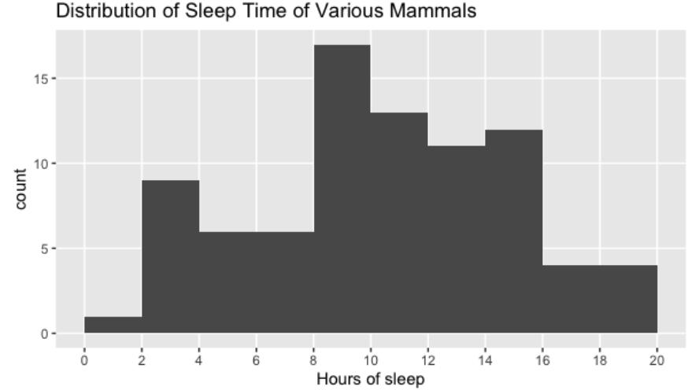
Aquí hay un contenedor de 0 a 2 horas, de 2 a 4 horas y así sucesivamente. Las alturas de las barras representan las cantidad de puntos de datos que caen en ese contenedor, por lo que hay un mamífero en el conjunto de datos que duerme entre 0 y 2 horas, y nueve mamíferos que duermen de dos a cuatro horas. Los histogramas son una excelente manera de resumir visualmente los datos, pero podemos usar estadísticas de resumen numérico para resumir aún más.
1.2.2 ¿Cuánto tiempo suelen dormir los mamíferos de este conjunto de datos ?
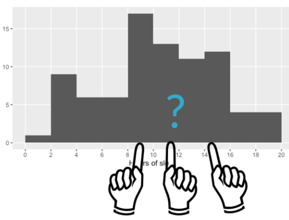
Una forma de resumir los datos es respondiendo a la pregunta de esta sección. Para responder a esto, necesitamos averiguar cuál es el valor típico o central de los datos. Discutiremos tres definiciones diferentes, o medidas de centro:
Media
Mediana
Moda
1.3 Medidas del Centro
1.3.1 Media
La media, a menudo llamada promedio, es una de las formas más comunes de resumir los datos. Para calcular la media, sumamos todos los números de interés y los dividimos por el número total de puntos de datos, que aquí es 83.
\[
media = \bar{x} = \frac{1}{n}\sum_{i=1}^n x_i
\]
Esto nos da 10 punto 43 horas de sueño. En R, podemos usar la función mean() pasándole la variable de interés.
mean(msleep$sleep_total)
[1] 10.43373
1.3.2 Mediana
Otra medida de centro es la mediana. La mediana es el valor en el que el 50% de los datos es inferior y el 50% de los datos es superior. Podemos calcular esto ordenando todos los puntos de datos y tomando el del medio, que sería el indice 42 en este caso.
En R, podemos usar la función median() para hacer los cálculos por nosotros.
median(msleep$sleep_total)
[1] 10.1
1.3.3 La Moda
La moda es el valor más frecuente en los datos. Si contamos cuantas ocurrencias hay dentro de cada sleep_total y ordenamos en orden descendente, veamos
library(tidyverse)
── Attaching core tidyverse packages ──────────────────────── tidyverse 2.0.0 ──
✔ dplyr 1.1.2 ✔ readr 2.1.4
✔ forcats 1.0.0 ✔ stringr 1.5.0
✔ lubridate 1.9.2 ✔ tibble 3.2.1
✔ purrr 1.0.1 ✔ tidyr 1.3.0
── Conflicts ────────────────────────────────────────── tidyverse_conflicts() ──
✖ dplyr::filter() masks stats::filter()
✖ dplyr::lag() masks stats::lag()
ℹ Use the conflicted package (<http://conflicted.r-lib.org/>) to force all conflicts to become errors
note que hay 4 mamiferos que duermen durante 12.5 horas, así que esta es la moda. La moda de la variable vore del conjunto de datos, que indica la dieta del animal es herbívora, veamomos:
msleep %>%count(vore, sort =TRUE)
# A tibble: 5 × 2
vore n
<chr> <int>
1 herbi 32
2 omni 20
3 carni 19
4 <NA> 7
5 insecti 5
La moda se usa a menudo para variables categóricas, ya que las variables categóricas, pueden estar desordenadas y, a menudo no tienen una representación numérica inherente.
1.4 Agregar un valor atípico
Ahora que tenemos muchas formas de medir el centro, ¿cómo sabemos cuál usar? Veamos un ejemplo. Aquí, tenemos todos los insectivoros en el conjunto de datos
Obtenemos un tiempo de sueño medio de 14.94 horas y un tiempo de sueño medio de 18.1 horas.
Ahora digamos que hemos descubierto un nuevo insectívoro misterioso que nunca duerme.
Si volvemos a tomar la media y mediana, obtenemos resultados diferentes. La media se puede reducir en más de 3 horas, mientras que la mediana cambió en menos de una hora. Esto se debe a que la media es mucho más sensible a los valores extremos que la mediana.
Dado que la media es más sensible a los valores extremos, funciona mejor para datos simétricos como este.
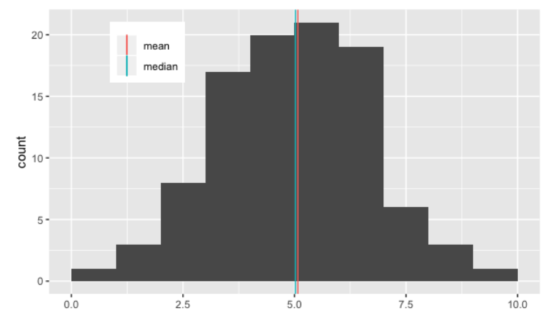
Observe que la media, en rojo, y la mediana en verde, estan bastante cerca.
1.5 Sesgo
Sin embargo, si los datos estan sesgados, lo que significa que no son simétricos, como se muestra en la figura siguiente
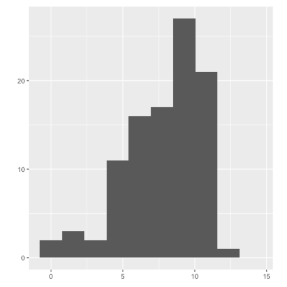
generalmente es mejor usar la mediana. En este histograma, note que los datos se apilan a la derecha. Los datos que se ven así se denominan datos asimétricos a la izquierda. Cuando los datos se acumulan a la izquierda, están sesgados a la derecha, vea la siguiente figura.
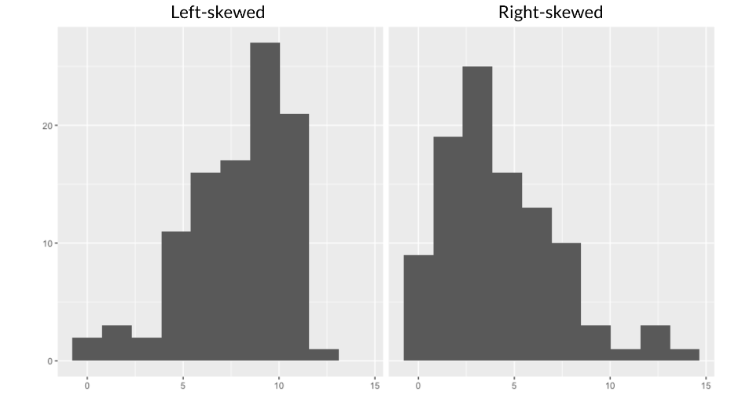
Cuando los datos están sesgados, la media y la mediana son diferentes. La media se tira en dirección del sesgo, por lo que es más baja que la mediana en los datos sesgados a la izquierda y más alta que la mediana en los datos sesgados a la derecha.
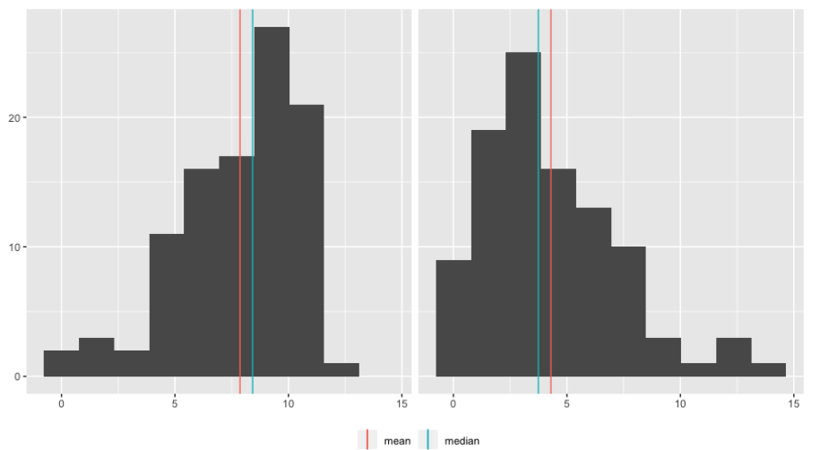
Debido a que la media se ve afectada por los valores extremos, es mejor usar la mediana, ya que se ve menos afectada por los valores atípicos.
1.6 Ejercicio 1
En este capítulo, trabajaremos con el indice de huella de carbono alimentario 2018. El conjunto de datos food_consumption contiene información sobre los kilogramos de alimentos consumidos por persona por año en cada país en cada categoría de alimentos (consumption), así como información sobre la huella de carbono de esa categoría de alimentos (co2_emissions) medida en kilogramos de dióxido de carbono o \(CO_2\), por persona por año en cada país.
En este ejercicio, nos encargaremos de calcular medidas de centro para comparar el consumo de alimentos en EE.UU y Bélgica.
Primero creamos dos marcos de datos: uno que contenga las filas de food_consumption para Bélgica y otro que contenga las filas de USA. Llamaremos a estos marcos de datos como belgica_consumption y usa_consumption. Veamos como hacerlo en R.
# Primero cargamos el conjunto de datosfood_consumption <-readRDS("food_consumption.rds")belgica_consumption <- food_consumption %>%filter(country =="Belgium")usa_consumption <- food_consumption %>%filter(country =="USA")
Ahora, calculamos la media y mediana de kilogramos de alimentos consumidos por persona por año para ambos países.
Bélgica
mean(belgica_consumption$consumption)
[1] 42.13273
median(belgica_consumption$consumption)
[1] 12.59
Usa
mean(usa_consumption$consumption)
[1] 44.65
median(usa_consumption$consumption)
[1] 14.58
Po último, filtremos food_consumption por filas con datos sobre Bélgica y EE.UU. Agruparemos los datos filtrados por país (country). Calcularemos la media y mediana de los kilogramos de alimentos consumidos por persona al año en cada país. Llame a estas columnas mean_consumption y median_consumption. Veamos:
food_consumption %>%# Filtramops para Belgium and USAfilter(country %in%c("Belgium", "USA")) %>%# agrupamos por pais (country)group_by(country) %>%# Obtenemos resumen de consumo medio y mediano.summarise(mean_consumption =mean(consumption),median_consumption =median(consumption))
# A tibble: 2 × 3
country mean_consumption median_consumption
<chr> <dbl> <dbl>
1 Belgium 42.1 12.6
2 USA 44.6 14.6
1.7 Ejercicio 2
En esta sección, usted aprendio que la media es la suma de todos los puntos de datos dividida por el número total de puntos de datos , y que la mediana es el valor medio del conjunto de datos donde el 50% de los datos es menor que la mediana y 50% de los datos es mayor que la mediana. En este ejercicio, comparará estas dos medidas del centro.
Para ello usaremos el paquete ggplot2 que nos facilita la creación de gráficos.
Primero, filtramos food_consumption para obtener las filas donde food_category está rice.
Segundo, cree un histograma usando ggplot2 de co2_emission para el arroz (rice)
food_consumption %>%# Filter for rice food categoryfilter(food_category =="rice") %>%# Create histogram of co2_emissionggplot(aes(co2_emission)) +geom_histogram()
`stat_bin()` using `bins = 30`. Pick better value with `binwidth`.
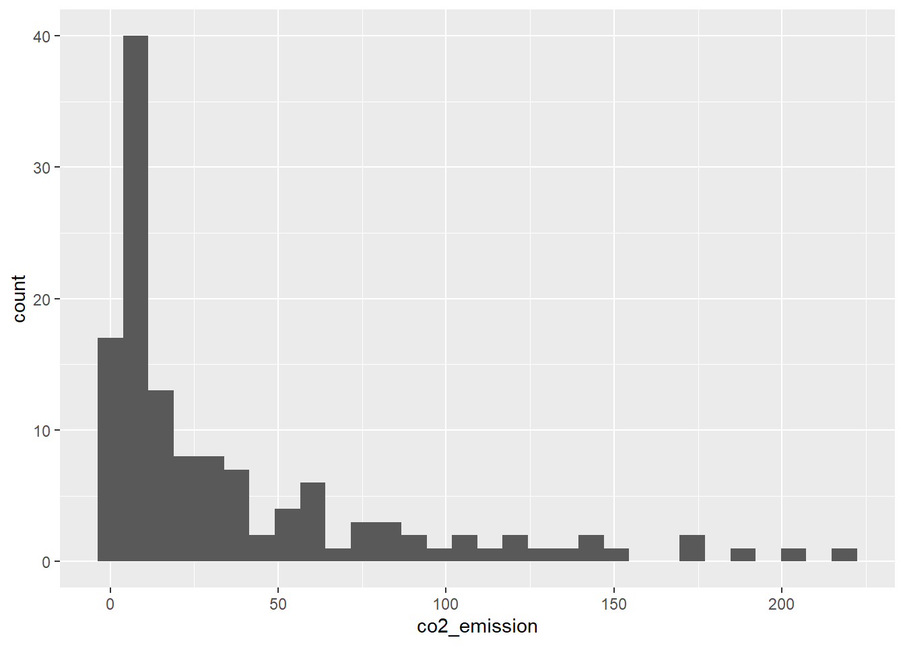
Mire el histograma para el arroz (rice) que acabamos de calcular. ¿Cuál de los siguientes terminos describe mejor los datos?
Sin sesgo
Sesgado a la izquierda
Sesgado a la derecha
Viendo el gráfico, claramento los datos están sesgado a la derecha.
En este mismo ejercicio hagamos algo más. Filtremos food_consumption para obtener las filas donde food_category está rice.
Luego, resumiremos los datos para obtener la media y la mediana de co2_emission, llamándolos mean_co2 y median_co2.
food_consumption %>%# Filtramos por categoría de alimentos de arrozfilter(food_category =="rice") %>%# obtenemos mean_co2 and median_co2summarize(mean_co2 =mean(co2_emission),median_co2 =median(co2_emission))
Dada la asimetría de estos datos, ¿Qué medida de tendencia central resume mejor los kilogramos de \(CO_2\) emisiones por persona por año para el arroz?
Media
Mediana
Ambos la media y la mediana
Viendo la asimetría de los datos de nuestro último histograma, la medida de tendencia central que mejor resume los kilogramos de CO2 emisiones por persona será o es la mediana.
1.8 Medidas de Propagación
En esta sección, hablaremos sobre otro conjunto de estadísticas resumidas: Medidas de propagación.
1.8.1 ¿Qué es Spread?
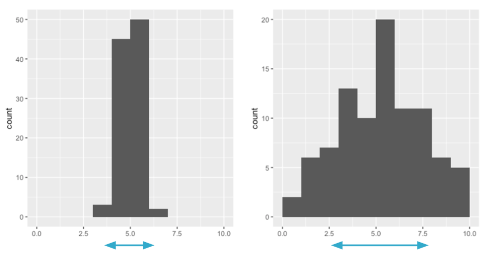
Spread es exactamente lo que parece: describe que tan separados o cerca están los puntos de datos. Al igual que las medias del centro, hay algunas medidas diferentes de extensión.
1.8.2 La Varianza
La primera medida, la varianza, mide la distancia promedio desde cada punto de datos hasta la media de los datos.
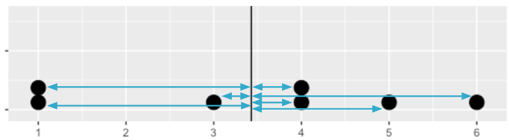
Para calcular la varianza, comenzamos calculando la distancia entre cada punto y la media, por lo que obtenemos un número para cada punto de datos.
Finalmente, dividimos la suma de las distancias al cuadrado por el número de puntos de datos menos 1, lo que nos da la varianza.
sum_sq_dists <-sum(squared_dists)sum_sq_dists
[1] 1624.066
Cuanto mayor es la varianza, más dispersos están los datos. Es importante tener en cuenta que las unidades de varianza están al cuadrado, por lo que en este caso son 19.8 horas al cuadrado.
sum_sq_dists/82
[1] 19.80568
Podemos calcular la varianza en un solo paso usando la función var de R.
var(msleep$sleep_total)
[1] 19.80568
1.9 Desviación Estándar
La desviación estándar es otra medida de dispersión, calculada tomando la raíz cuadrada de la varianza. En R se usa la función std para su obtención. Lo bueno de la desviación estándar es que las unidades suelen ser más faciles de entender ya que no están elevadas al cuadrado. Es mejor pensar en 4 horas y media que en 19.8 horas al cuadrado.
sd(msleep$sleep_total)
[1] 4.450357
1.9.1 Desviación Absoluta Media
La desviación absoluta media toma el valor absoluto de las distancias a la media y luego toma la media de esas diferencias. Si bien esto es similar a la desviación estándar, no es exactamente lo mismo. La desviación estándar eleva al cuadrado las distancias, por lo que las distancias más largas penalizan más que las más cortas, mientras que la desviación media absoluta penaliza cada distancia por igual. Uno no es mejor que el otro, pero sd es más común que mad.
Antes de discutir la siguiente medida de dispersión, hablemos rapidamente sobre los cuartiles. Los cuartiles dividen los datos en cuatro partes iguales. Aquí llamamos a la función quantile() para obtener los cuartiles de los datos.
quantile(msleep$sleep_total)
0% 25% 50% 75% 100%
1.90 7.85 10.10 13.75 19.90
Esto significa que el 25% de los datos estan entre 1.9 y 7.85, otro 25% de los datos está entre 7.85 y 10.10, y así sucesivamente. Esto significa que el segundo cuartil divide los datos en dos, con el 50% de los datos debajo y el 50% de los datos, arriba, por lo que es exactamente igual que la mediana.
1.9.3 Gráficas de caja usan cuartiles
Las cajas en los diagramas de cajas representan cuartiles. La parte inferior de la caja es el primer cuartil y la parte superior de la caja es el tercer cuartil. La linea media es el segundo cuartil, o la mediana.
Los cuantiles, también llamados percentiles, son una versión generalizada del cuartil, por lo que pueden dividir los datos en 5 partes o diez partes, por ejemplo. De forma predeterminada la función quantile devuelve los cuartiles de los datos, pero podemos ajustar esto usando el argumento probs , que toma un vector de proporciones.
Aquí, dividimos los datos en cinco partes iguales. También podemos usar la función seq(from, to, by) como atajo, que toma el número más bajo, el número más alto y el número por el que queremos saltar. Podemos calcular los mismos cuantiles usando seq de cero a uno, saltando de 0.2.
quantile(msleep$sleep_total, probs =seq(0, 1, by =0.2))
El rango intercuartilico, o IQR, es otra medida de dispersión. Es la distancia entre los percentiles 25 y 75 que también es la altura de la caja en un diagrama de caja. Podemos calcularlo usando la función cuantil para obtener 5.9 horas.
Los valores atípicos son puntos de datos que son sustancialmente diferentes de los demás. Pero, ¿cómo sabemos qué es una diferencia sustancial? Una regla que se usa a menudo es que cualquier punto de datos menor que el primer cuartil menos 1.5 veces el IQR es un valor atípico. Así como cualquier punto mayor que el tercer cuartil más 1.5 veces el IQR.
\(data < Q_1 - 1.5\times IQR\)
\(data > Q_3 + 1.5\times IQR\)
1.10.2 Encontrar valores atípicos
Para encontrar valores atípicos, comenzaremos calculando el IQR de los pesos corporales de los mamiferos.
# A tibble: 23 × 4
name vore sleep_total bodywt
<chr> <chr> <dbl> <dbl>
1 Cheetah carni 12.1 50
2 Cow herbi 4 600
3 Goat herbi 5.3 33.5
4 Asian elephant herbi 3.9 2547
5 Horse herbi 2.9 521
6 Donkey herbi 3.1 187
7 Giraffe herbi 1.9 900.
8 Pilot whale carni 2.7 800
9 Gray seal carni 6.2 85
10 Human omni 8 62
# ℹ 13 more rows
Podemos ver que hay 23 valores atípicos de peso corporal en este conjunto de datos, incluidos la vaca y el elefante asiático.
1.11 Ejercicio 3
Los cuantiles ya sabemos que son una excelente manera de resumir datos numéricos, ya que se pueden usar para medir el centro y la dispersión, así como para tener una idea de dónde se encuentra un punto de datos en relación con el resto del conjunto de datos. Por ejemplo, es posible que desee otorgar un descuento al 10% de los usuarios más activos en un sitio web.
En este ejercicio, calculará cuartiles, quantiles y deciles, que dividen un conjunto de datos en 4, 5 y 10 partes, respectivamente.
Primero calculemos los cuartiles de la columna co2_emssion de food_consumption.
Ya vio previamente que la varianza y la desviación estándar son dos de las formas más comunes de medir la dispersión de una variable, y practicaremos su cálculo en este ejercicio. La difusión es importante ya que puede ayudar a informar las expectativas. Por ejemplo, si un vendedor vende una media de 20 productos al día, pero tiene una desviación estándar de 10 productos, probablemente habrá días en los que solo venderá uno o dos. Información como esta es importante, especialmente cuando se hacen predicciones.
Para este ejericio, primer calcularemos la varianza y la desviación estándar de co2_emission para cada una de las food_category agrupando por y resumiendo la varianza como var_co2 y la desviación estándar como sd_co2.
Luego, creemos un histograma de co2_emission para cada una de food_category usando facet_wrap().
library(ggplot2)ggplot(food_consumption, aes(co2_emission)) +# Creación del histogramageom_histogram() +# Creamos subgráficos separados para cada categoría de food_categoryfacet_wrap(~ food_category)
`stat_bin()` using `bins = 30`. Pick better value with `binwidth`.
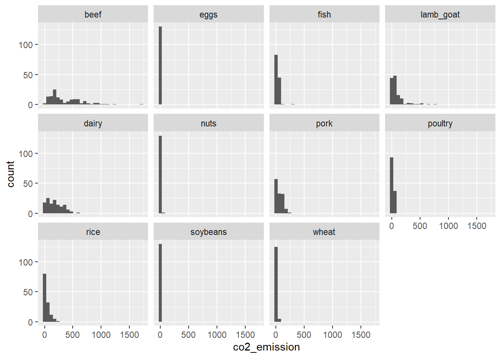
Excelente medición de dispersión! La carne de res tiene la mayor cantidad de variación en sus emisiones de CO2, mientras que los huevos, las nueces y la soya tienen cantidades relativamente pequeñas de variación.
1.13 Ejercicio 5
Los valores atípicos pueden tener grandes efectos en las estadísticas como la media, así como en las estadísticas que se basan en la media, como la varianza y la desviación estándar. El rango intercuartilico, o IQR, es otra forma de medir la dispersión que está menos influenciada por los valores atípicos. IQR también se usa a menudo para encontrar valores atípicos. Si un valor es menor que \(Q_1 - 1.5\times IQR\) o mayor que \(Q_3 + 1.5\times IQR\), se considera un valor atípico. De hecho, así es como ggplot2 se calculan las longitudes de los bigotes en un diagrama de caja.
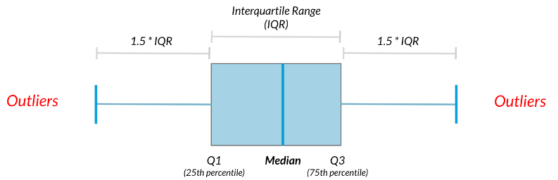
En este ejercicio, calcularemos IQR y lo utilizaremos para encontrar algunos valores atípicos.
Primero calculamos el total de co2_emission por país agrupando por país y tomando la suma de co2_emission. Llamaremos a la suma total_emission y almacenaremos el marco de datos resultante como emission_by_country.